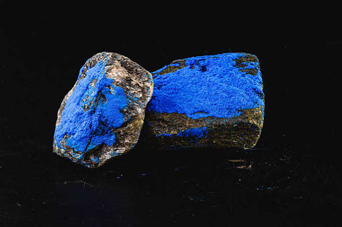
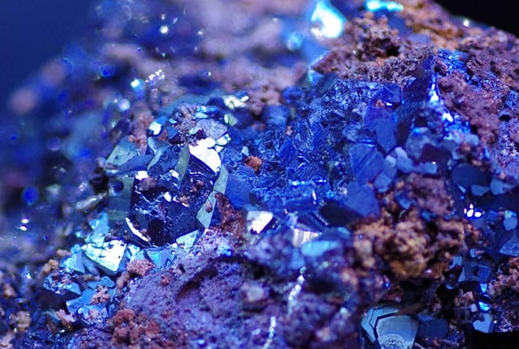

¿Qué es?
Es un metal de transición de color blanco plateado con tonos azulados. Es increíblemente duro, ferromagnético (atrae imanes) y soporta temperaturas extremas sin debilitarse. No se encuentra libre, sino en minerales como la cobaltita.

Del Arte a la Tecnología
Históricamente fue famoso por crear el pigmento "Azul Cobalto" para cerámicas y vidrios finos. Hoy, es el corazón de las baterías de iones de litio (celulares, autos eléctricos) y superaleaciones para turbinas de aviones.
